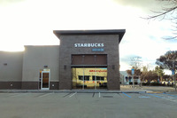
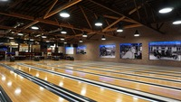
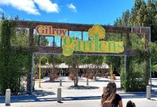

ELECTRICAL SERVICES
Gilroy Electric, Inc. provides a wide range of electrical services for commercial and residential properties. Please contact us for more information or if you don't see your specific need listed below. We will be happy to answer any of your questions. Our experienced electricians are ready to help you. Contact us at gilroy-electric@live.com
Residential Services
- Appliance & Lighting Installations
- Bathroom & Spa Wiring
- Residential Wiring & Upgrades
- Underground Trenching
Commercial Services
- Commercial Wiring & Remodels
- Parking Lot & Street Lighting
- Power Meter & Electrical Panel Service
- Data Network & Telephone Installations
Lighting & Design
- Architectural Lighting Design
- Exterior Lighting & Power Supply
- Audio-Visual & Home Automation
Wiring & Safety
- Shock Protection & GFI Circuit Installations
- Service Upgrades & Replacements
Past Services
Gilroy 1st St. Starbucks
In a pinch, Gilroy Electric routed electrical power from a nearby building overhead across a parking lot, enabling the new First Street Starbucks to start operations months ahead of schedule. GE also handled all outdoor lighting, signage, and the drive-through installation."
Gilroy Bowling Alley
Gilroy Electric rebuilt the Gilroy Bowling Alley from the ground up, handling all indoor and outdoor lighting installations, including lighting for the kitchen area, lounge, and signage.
Gilroy Gardens

Gilroy Electric wired multiple buildings in the theme park, including rides, bathrooms, restaurants, and indoor and outdoor lighting.